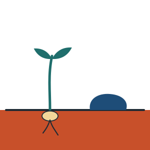
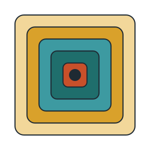
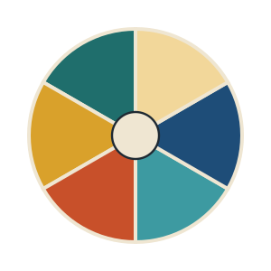
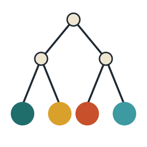
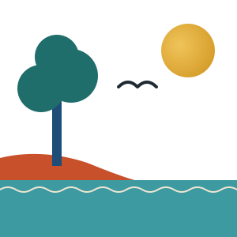
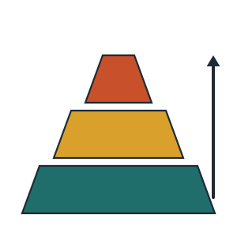
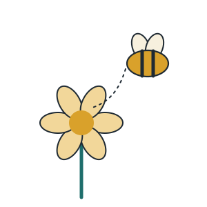
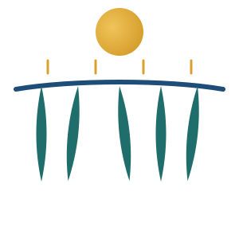
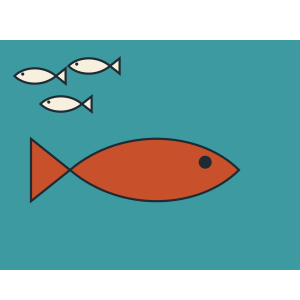
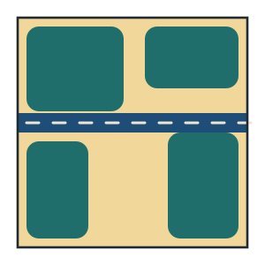

Teacher slide decks for a 7-week unit on classification, biodiversity, Australian ecosystems, and conservation.
Each lesson’s deck, and the page it starts on in the printed booklet. Its worksheet sits underneath.
What counts as living, and how scientists sort living things into groups.

1 Living or Non-living? Turn to page 2Characteristics of life (MRS GREN), organisms vs non-living things, dead vs non-living. Victorian examples.
✎Worksheet 140 marks
2 Classification — Levels Turn to page 5Linnaean system (Kingdom to Species), using features to classify, Australian species examples.
⚡ Quiz: Lesson 1
✎Worksheet 234 marksNaming species, the six kingdoms, and identifying organisms with keys.

3 Scientific Names & The Six Kingdoms Turn to page 9Binomial nomenclature, reading and writing scientific names, the six kingdoms with Victorian examples.
⚡ Quiz: Lessons 1–2
✎Worksheet 337 marks
4 Dichotomous Keys Turn to page 12Identifying organisms using branching keys, constructing keys, Australian species identification.
⚡ Quiz: Lessons 1–3
✎Worksheet 435 marksAustralian ecosystems, biodiversity, and how energy moves through a food web.

5 Australian Ecosystems & Biodiversity Turn to page 15Biotic and abiotic factors, Victorian ecosystems, biodiversity — genetic, species, and ecosystem levels.
⚡ Quiz: Lessons 1–4
✎Worksheet 536 marks
6 Food Webs & Energy Flow Turn to page 18Producers, consumers, decomposers, food chains and food webs using Victorian woodland species.
⚡ Quiz: Lessons 1–5
✎Worksheet 639 marksWhat ecosystems do for us, and how living things are adapted to them.

7 Ecosystem Services Turn to page 25Provisioning, regulating, cultural and supporting services. Native bee pollination, Caring for Country.
⚡ Quiz: Lessons 1–6
✎Worksheet 737 marks
8 Adaptations Turn to page 28Structural, physiological and behavioural adaptations. Australian examples across ecosystems.
⚡ Quiz: Lessons 1–7
✎Worksheet 837 marksThe threats — introduced species and human impacts.

9 Introduced Species Turn to page 31Native vs introduced vs invasive, the four mechanisms of harm, and Victorian case studies — red fox and European carp impact chains.
⚡ Quiz: Lessons 1–8
✎Worksheet 937 marks
10 Human Impacts on Ecosystems Turn to page 35Habitat loss and fragmentation, the edge effect, eutrophication, climate change, and how threats compound.
⚡ Quiz: Lessons 1–9
✎Worksheet 1037 marksConservation, and what we can do about it.
In-situ vs ex-situ conservation, Victorian success stories, habitat corridors, and individual and community action.
⚡ Quiz: Lessons 1–10
✎Worksheet 1137 marksEverything on the tabs above, with what each one holds.
The materials students work from across the unit. The Species Profile is the source of facts for every stage of the Research Portfolio.
The unit mapped week by week — not gated, but written for staff.
Password-gated — these pages decrypt in the browser with the staff password.